The logbook: what I built with AI, 2026
For teachers, to read at your own pace. Six questions. Stop after any one.
Noel Robert, Physical Sciences teacher
Press → or Space, or tap the right edge, to move on. Each click shows the next line.
This talk was built with AI.
So was this book.

Inside the book
One book: 18 modules and 115 sections, every one built to the same route.
This talk
Six questions teachers ask me. Start anywhere.
Click a question to jump to it. The six circles at the top right of every slide do the same, and tick each part off as you go.
Part 1 · Is this any good?
Two pages on momentum. AI made both. Which would you give your class?
- Momentum = mass × velocity
- Heavier things have more momentum
- Fun fact: a truck has lots of momentum!
- Remember: practice makes perfect!
Mock-up of a typical one-prompt result

Worked example 7.2, coursebook page 142
Decide, then click
Page A is friendly and empty: there is nothing for a pupil to do. Page B uses the exam board's wording, sets out a worked example like a memo, and names a mistake pupils really make.
Part 1 · Is this any good?
Same AI. The difference was the teacher.
- The AI has read almost everything, so it can make something generic in seconds.
- It does not know your pupils, your curriculum or your exam. You do.
- This talk is about getting that knowledge onto the page.
Part 2 · Will it harm my pupils' learning?
Nearly a thousand pupils practised maths with AI. Then the AI was taken away.
High-school pupils in Türkiye practised in three groups: no AI, an ordinary chatbot, and a tutor chatbot that gave hints, not answers. Every number is compared with the no-AI group.
Decide, then click
Part 2 · Will it harm my pupils' learning?
Practice soared. Learning sank.
- In the exam, the chatbot group scored 17% lower than pupils who never had AI. The hint-only group did about the same as the no-AI group.
- Answers make practice easy and learning shallow. Hints keep the thinking with the pupil.
Source: Bastani and others, 2025, PNAS
Part 2 · Will it harm my pupils' learning?
AI goes wrong in four ways. Expect all four.
This goes for teachers too. Check everything against what you know.
Part 2 · Will it harm my pupils' learning?
One routine keeps the brain on: attempt first, then ask for a hint.
- 1Attempt it first.
- 2Name where you are stuck.
- 3Ask for one hint.
- 4Check the reply.
- 5Close the AI and solve a fresh question alone.
The measure that counts is what a pupil can do with the AI switched off.
ILLUSTRATION A hint, not an answer.
Part 2 · The film
My two booklets teach that routine. In three minutes.
Part 3 · What makes the output good?
The AI forgets everything when the chat ends. So I wrote my rules down once.
In an ordinary chat you start from zero every time.
- What I know about good teaching material
- Written on one page
- The AI reads it before every job
I call the page my lens.
Part 3 · What makes the output good?
My lens has five parts. Yours will be your own.
Part 3 · What makes the output good?
One test for every page: what must the pupil recall, think about or produce?
Part 3 · What makes the output good?
Help fades step by step until the pupil works alone. Then the idea comes back later.
The red bar shows how much help the page gives. It shows the direction only, not a measurement.
Part 3 · What makes the output good?
Every question page has a matching answer page, so pupils can mark themselves.
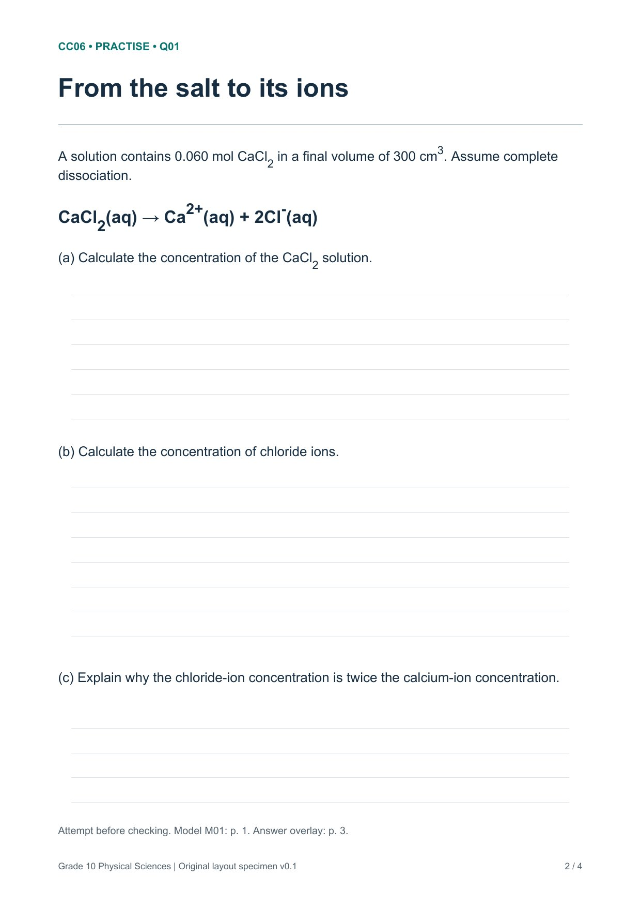
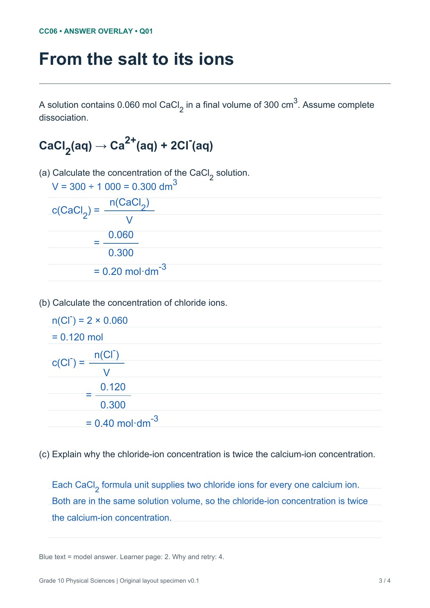
Part 3 · The print and design part of the lens
Print-light: less colour, same content.
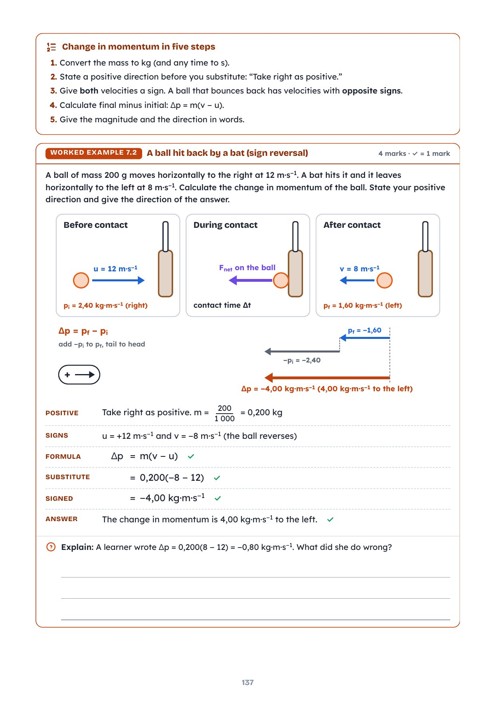
Part 3 · What makes the output good?
Colleagues ask what prompt I used. There is no prompt. There is a page of rules.
Part 3 · The AI literacy film
That film took five goes. The difference was the teacher.
The three-minute film you saw in part 2. Between the first version and the fifth, the AI's tools never changed. These eight calls were mine.
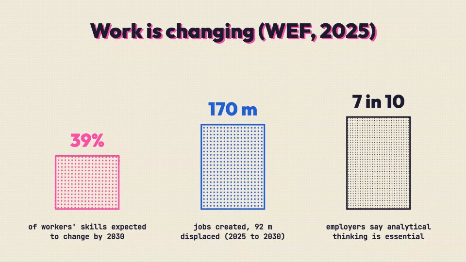
- Set the standard: "childish" → professional
- Protected the content: "doesn't do the books justice"
- Managed the load: "too fast, let them read"
- Dual coding: a voice, plus arrows on the exact words
- Chose what matters: 12 booklet pages
- Chose who speaks: a South African voice
- Kept it honest: invented demo data
- Decided when it was good enough
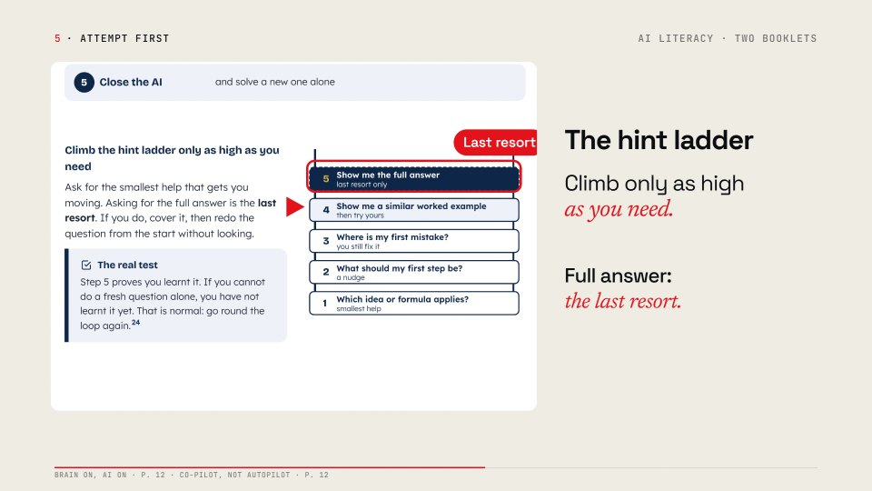
AI did the production.The teacher did the pedagogy.
Part 3 · What makes the output good?
Built to make good learning hard to avoid.
AI here isn't built to make learning easy. It's built to make good learning hard to avoid.
- Beautiful isn't the same as learned.
- Built backwards from what earns marks.
- Every screen ends in a pen.
- Discomfort is the signal, not the problem.
- My expertise does the sequencing. AI does the labour.
Watching is easy. Writing is learning.
Added 28 Nov 2026
Part 3 · What makes the output good?
Marks now, learners for life.
Marks open doors, so I'll never apologise for chasing them. But in five years most learners will have forgotten the content. What I want them to keep is how they learned it.
Marks now
Built backwards from the exam and the memo.
For life
- The how, by nameRetrieve, space, mix, check
- Testing to learnQuizzes that count for nothing
- Habits that travelAny subject, university, work
- Struggle that feels goodEnjoying the click
Added 28 Nov 2026
Part 4 · What could it do in my week?
You imagine it and describe it. The AI builds it. You judge it.
Part 4 · What could it do in my week?
You talk to it in plain words. These are three messages I really typed.
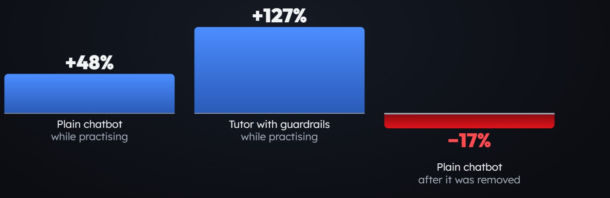
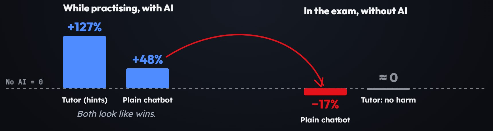
A research chart: three loose bars became a two-part story, practice then exam.
1/3Four words, and a weak slide of two thin cards was rebuilt into a clear side-by-side with one recommendation.
2/3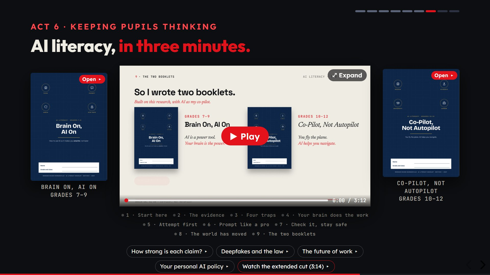
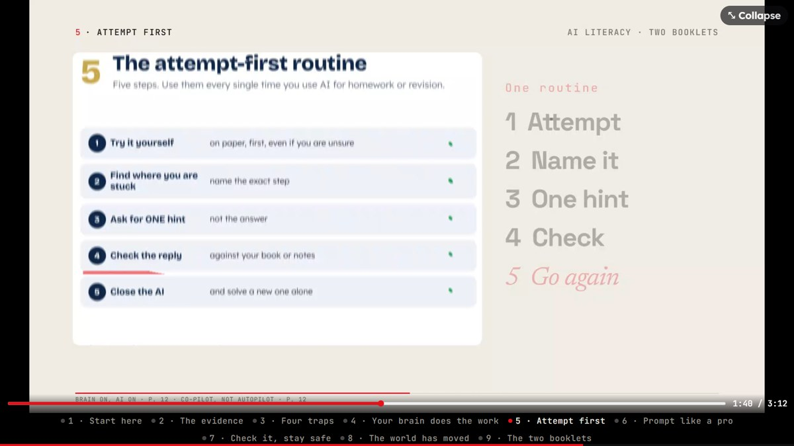
A video: an Expand button that fills the screen, and collapses back.
3/3I explained. The AI made the changes.
But I still had to know what better looks like.
Click, or press the right arrow, for the first message
Part 4 · What could it do in my week?
A first job: one worked example becomes three practice questions and a memo.

Part 4 · What could it do in my week?
Every number was right. Six other things were not.
I checked all three answers and all three "explain" lines myself. Nothing was wrong with the physics or the arithmetic. Then I changed this:
- Units. It wrote
m.s^-1. The book writes m·s⁻¹. - No diagrams. Text only. The before, during and after strip and the vector triangle are half of what makes the page teach.
- No Common mistake box. The page ends with one. This did not have it.
- All three questions were the same. Every one a rebound. I made question 3 a ball that stops, so pupils meet the contrast the Common mistake box is about.
- One explanation was muddled. It said a learner used a "speed change" where it meant velocity, and it said the same thing twice.
- "He" and "she" for the same imaginary learner. Both became the learner.
It did the typing. I did the judging.
Part 4 · Every school day
This is what my pupils see every day.
Part 4 · The map
The home page is the hub: every tool is one tap away.
Part 4 · What could it do in my week?
The AI fills my course pages for me, so I keep the teaching.
└ by paper
Notes and worked examples
└ by topic
Studio links
Home page
The sources are only read. An email is only ever a draft: I press send.
Part 4 · What could it do in my week? INVENTED PUPILS
Design the quiz so that the marking does itself.
| Pupil 1 | 14/15 |
| Pupil 2 | 11/15 |
| Pupil 3 | 9/15 |
The trick is in the design. The platform marks the quiz, and I check it before it goes out.
Part 4 · What could it do in my week? INVENTED CLASS
I do the marking. Then AI helps me moderate it.
- I mark every script myself.
- AI checks my marking: errors carried forward, consistency from script to script, and the adding up.
- It puts the marks into a spreadsheet.
- It analyses them pupil by pupil.
- It drafts a comment for each pupil, which I edit.
It never decides a mark.
| Pupil | Q1 | Q2 | Q3 | Total | Check |
|---|---|---|---|---|---|
| 07 | 6 | 8 | 5 | 19 | |
| 12 | 4 | 7 | 6 | 18 | adds to 17 |
| 15 | 7 | 3 | 4 | 14 | |
| 21 | 5 | 2 | 6 | 13 | Q2: error carried forward? |
| 28 | 8 | 9 | 7 | 24 |
Part 4 · One address
It all hangs off one address I own.
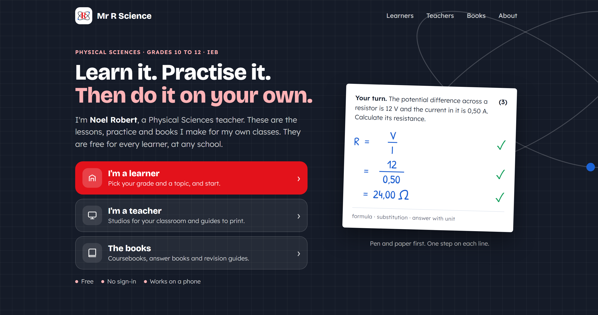
Part 4 · The same method, scaled up
Four tools, one job each.
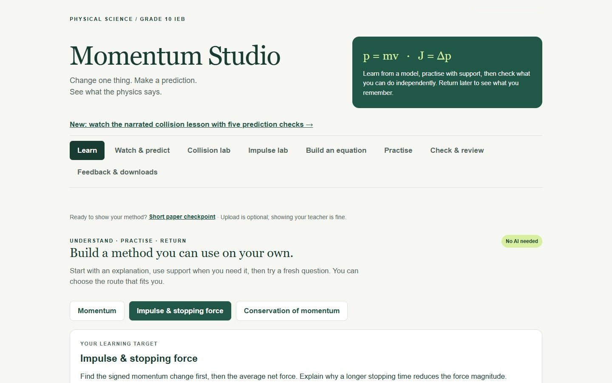
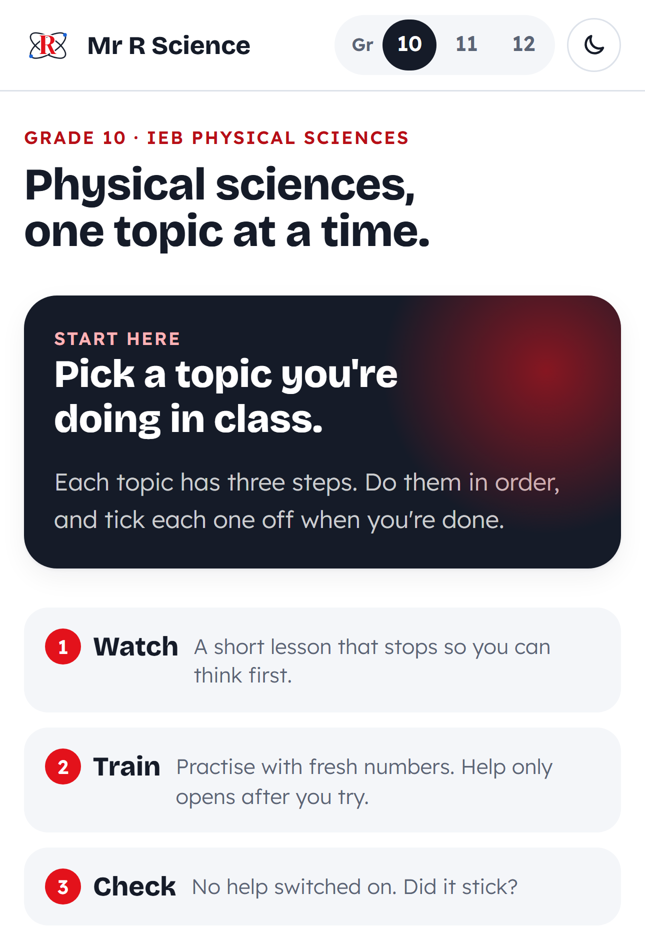
All four are built to make pupils think, and all four work with the AI switched off.
Part 4 · The learning studios
The studios make pupils predict, practise, then check on their own.
Momentum Studio, with a crash simulation
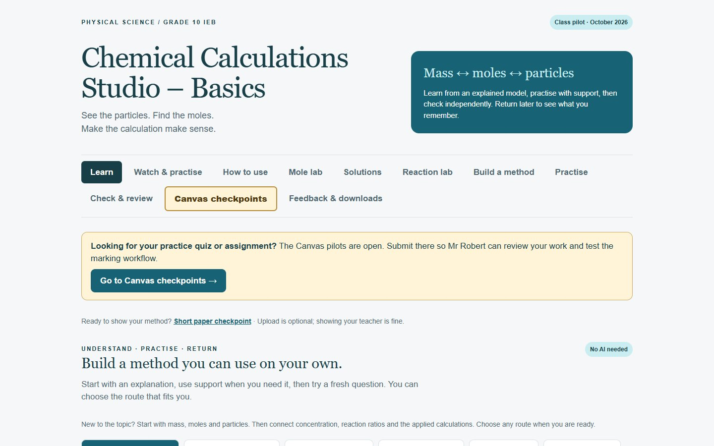
offline copyChemical Calculations Studio: mass, moles and particles
Part 4 · Inside a studio
The lesson video stops and makes pupils predict before it explains.
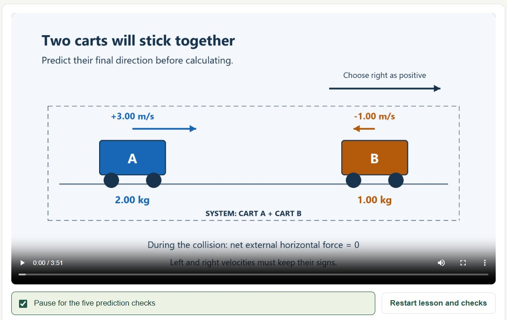
Part 4 · Grade 7 lesson videos
Every YouTube clip replaced by our own video, in our own words.
Before: a good YouTube clip
Someone else's lesson,
someone else's syllabus
- Adverts before and during
- "Up next" pulls them away
- Not the words the exam marks
After: our Grade 7 video
- No adverts, nothing up next
- The book's words and section numbers
- Ends by sending them to the page
15 videos so far, for a Grade 7 course being built for 2027.
Part 4 · Grade 7 lesson videos
One book section becomes one short video. I check the words and the finished video.
Change one sentence, and only that part is voiced again.
Module 4: 62 voice clips, about 11 minutes of speech, recorded in under 2 minutes. Writing and checking the words is where the time goes.
The voices are labelled AI. The teaching, the words and the checks are mine.
Part 4 · My voice, without the recording
I recorded once. Now I approve, and the computer records.
Without AI: still possible, and it works
… then again for every video. 10 videos means 10 sessions.
With AI: I record once
The voice is mine because the words are mine.
Labelled "AI voice of Mr R". Not used with classes yet.
Part 4 · My voice, without the recording
Each voice has a job. Mine only says words I approved.
Not used with classes yet.
Part 4 · A pupil's route
Inside one topic there are three steps, and the help is taken away as you go.
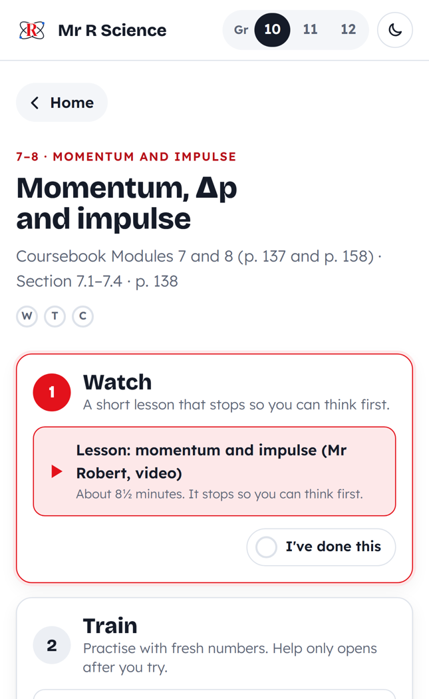
- 1Watch"A short lesson that stops so you can think first."The pupil predicts before the explanation arrives.
- 2Train"Practise with fresh numbers. Help only opens after you try."New numbers every time, so there is nothing to memorise.
- 3Check"No help switched on. Did it stick?"Three fresh questions, alone. This is the one that counts.
The words in quotation marks are the app's own, as a pupil sees them.
Part 4 · What the route is for
Every step hands the pupil back to pen and paper.
The app is not there to keep a pupil on a screen. It is there to send them back to the page, working alone.
Part 4 · The study coach
The coach asks one question, then hands the pen back.
I = V/R = 10/12 = 0,83 A
- 1Says what is right first
- 2Names the first gap only, with one question
- 3Talks in memo marks and names its source
- 4Three short sentences, never asks for a name
- 5Ends every session on paper
A made-up attempt. Tested only with made-up attempts so far, not with classes.
Part 4 · The study coach
Help comes one rung at a time. The answer waits for two more real tries.
Part 4 · The study coach
A website can't keep a secret. So a locked post office sits in the middle.
The key never sits on the website, where anyone could copy it.
Cost: about R0,70 a reply, capped at $20 a month. Switched off, the practice page still works.
Part 4 · The study coach
240 test conversations before any pupil. I wrote the rules, and I marked the coach.
Made-up attempts, the live rules, each reply checked against my marking. Each fault became a rule change, then the same 240 ran again.
Part 4 · Why it always ends on paper
Pen on paper, until it is muscle memory.
In my classroom, pupils do not learn behind a screen. The website and the app are for the hours I am not there. Every route through them ends in the same place.
A screen can prompt, practise and check. The learning is in the hand.
A 2024 EEG study found more of the brain working together when writing by hand than when typing (van der Weel and van der Meer, Frontiers in Psychology). Others argue that is not proof of better learning. I teach it this way because of what I see in my classroom.
Part 4 · Beyond the classroom: the marks dashboard
The picture in my head: Hours of spreadsheet work to see how a whole grade is doing.
A whole grade's marks, in one quick snapshot.
Demo version with invented data. Every pupil, group and mark in it is made up.
Part 4 · Beyond the classroom: the staff app
The picture in my head: Too many platforms. One place for every link, plus an Emergency button for the teacher in a panic, because their phone is always on them.
The school day, safety and duties, in every teacher's pocket.
Demo version with invented data. Every name, notice and duty is made up.
Part 4 · AI for marking REAL SCRIPT, ANONYMISED
My red pen first. Then a green moderator's pen.
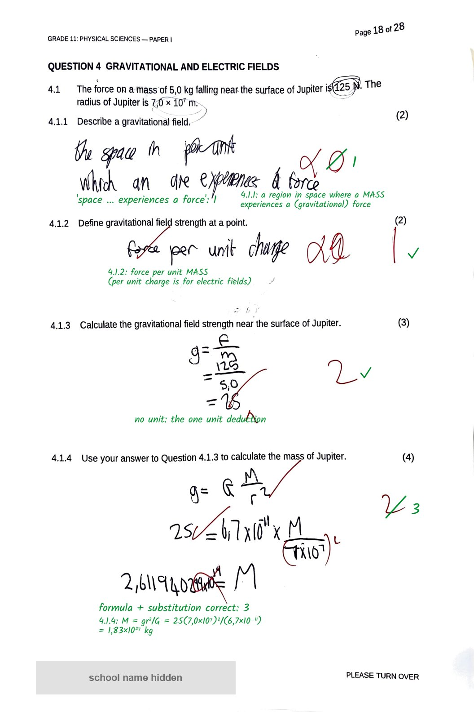
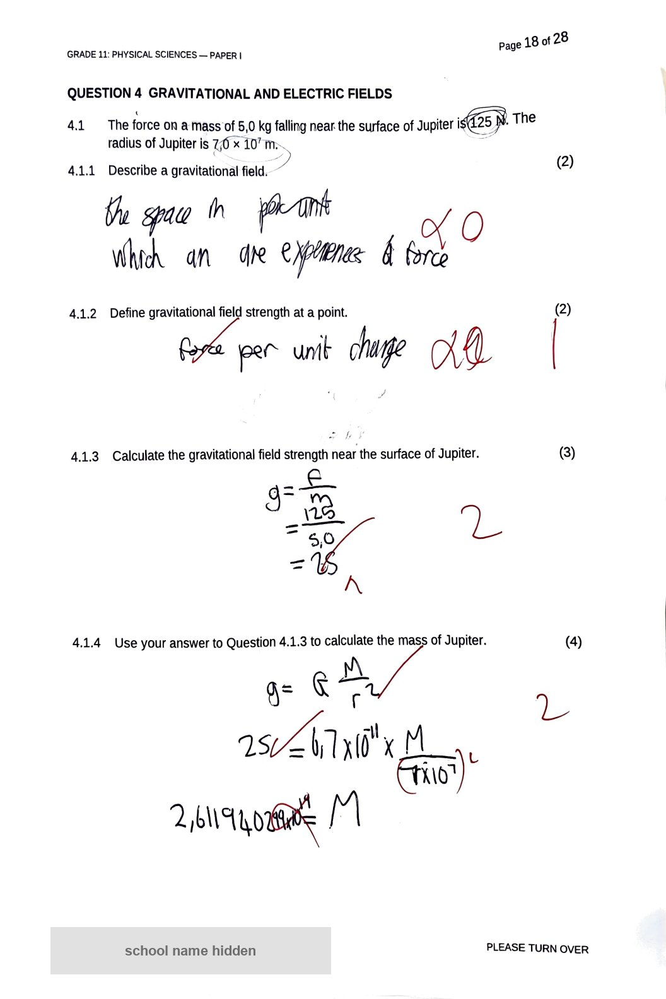
- Red: I mark every script myself.
- Green: AI moderates it, written straight onto the scan in a handwriting font.
- A tick where it agrees. A strike and a new mark where it doesn't, with the reason under the answer.
- I check every green change. I still decide every mark.
Name, class and school hidden. Only question marks show.
Part 4 · AI for marking REAL SCRIPT, ANONYMISED
The moderation is written inside the script.
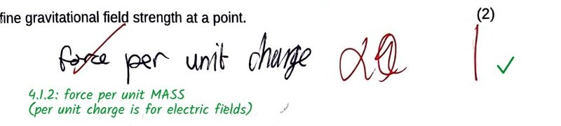
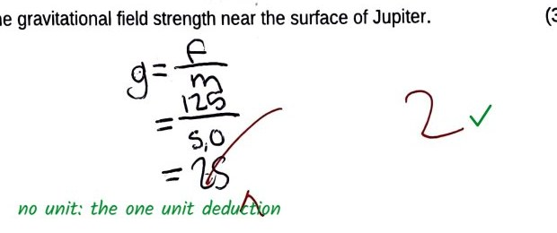
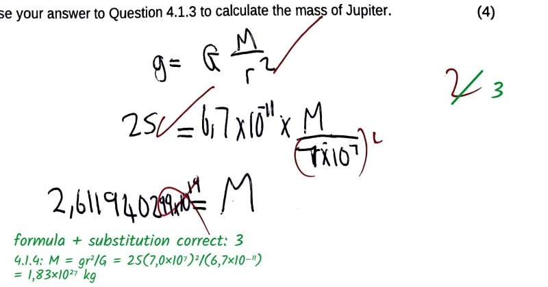
Part 4 · AI for marking REAL SCRIPT, ANONYMISED
Where marks were lost, feedback on the spot.
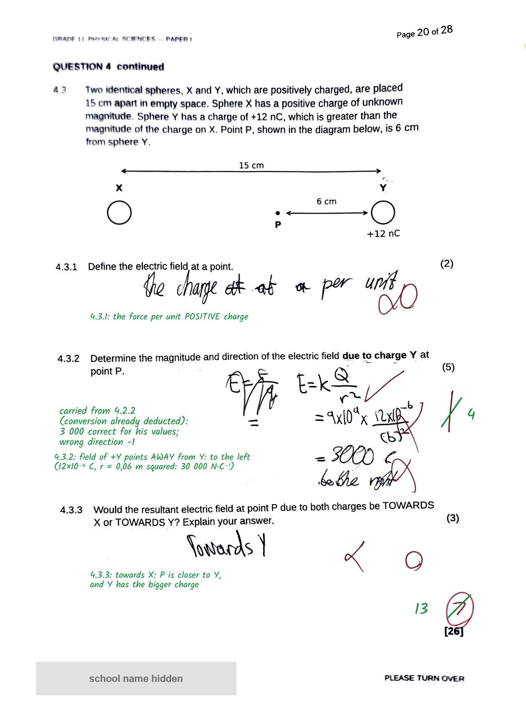
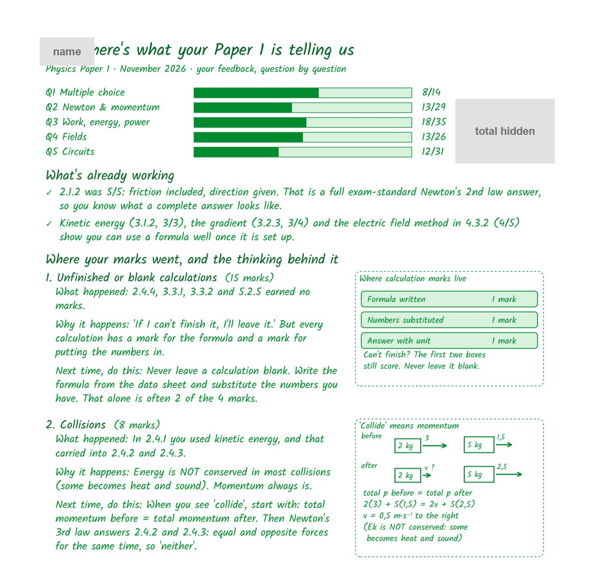
Part 4 · AI for marking INVENTED CLASS
Raw marks in a spreadsheet unlock the analysis.
Click a bar for more.
An invented class of 24 pupils, one 135-mark paper.
- Whole paper: who needs help first.
- Question by question: what to reteach, not just who.
- Per pupil: the feedback page you just saw.
Part 4 · The weekly loop
Your weekly loop: AI checks the marking, learners do the thinking.
Step 6 · Reteach, then again
Assessment that builds mastery
Progress only moves when the learner does the work.
- WatchedThe lesson was opened. It earns nothing.
- With helpAnswered with a hint or a worked example open.
- On my ownAnswered with no help.
- On my own, again laterAnswered with no help again, days later.
In the app now Help opens only after a try, “Check it on my own” with help closed, and a check again a few days later.
Planned for 2027 The four steps above and the Again list.
Part 4 · The same lens, for everything else too
The same lens and the same method, for everything else too.
Click a tile to look inside. Esc comes back here.
Part 4 · What could it do in my week?
The biggest job so far: a 469-page coursebook with a matching 326-page answer book.
The lens came first. The pages came after.
Part 5 · Is it safe, and what goes wrong?
Pupil data stays in the school's own systems.
| The rule | What it means |
|---|---|
| Marks files stay put | They stay in the school's systems |
| Anything that collects pupil data | Runs in the school's own systems, with approval |
| Passwords and sending | Passwords are never shared; a person sends every email |
| The study coach | Never asks for a name; the log is anonymous and kept for 30 days; there is an off switch |
Before you start, check your school's own rules on AI, and give it only material you have the right to use.
Part 5 · Is it safe, and what goes wrong?
The AI makes mistakes. So checking is part of the method, and I still read every page.
Then I moderated every page myself. Nothing reaches pupils until I approve it.
Part 5 · Is it safe, and what goes wrong?
Every step saved. Nothing goes live without me.
AI never decides a mark. I mark every script first; AI then checks my marking, and I check every change.
Part 5 · Is it safe, and what goes wrong?
I made these mistakes so that you do not have to.
| What went wrong | What I do now |
|---|---|
| One giant chat for a whole book: it lost my first instructions | One job per chat, and work saved as files |
| My rules lived in three places, so every job started differently | One page of rules that every job reads first |
| Simple jobs on the most powerful setting, which burned my limit | Ask first which model and effort the job needs |
Part 5 · Is it safe, and what goes wrong?
What it costs, and where it stops.
Part 6 · How do I start?
Start small. There are three rungs, and each one is a fine place to stop.
Part 6 · The first rung
Your first job: paste this, with a page of your own.
Part 6 · How I got here
Each step fixed one problem and showed me the next.
Part 6 · The third rung
I ask from anywhere. The work runs on my PC. I only approve sign-ins.
Plan in the cloud. Build on my computer.
Part 6 · The foundation, set up once
In a normal chat, the AI forgets everything when the chat ends. The foundation is how I make it remember, and how I make sure my work is mine.
"None of this is technical for me. I asked the AI to set it up, and I only clicked Allow when it asked."
AllowPart 6 · The third rung
Five things, once, on day one. Ask the AI to do each one.
Step 3 is the one only you can do. From then on, every job begins with "Read my hub first."
Part 6 · Settings
Three dials: which brain, how long it thinks, how big the team.
Before every job, the AI recommends the settings and waits for my "go".
Part 6 · Your toolbox
Your toolbox: skills, connectors, plugins, extensions.
Connect only what you need.
Part 6 · Everything in one place
Everything from this talk, in one place.
The AI brings the hands.
noelrobert-science.github.io/ai-pd/starter-kit
Noel Robert. Free to share. Not for sale, and not to be changed. CC BY-NC-ND 4.0